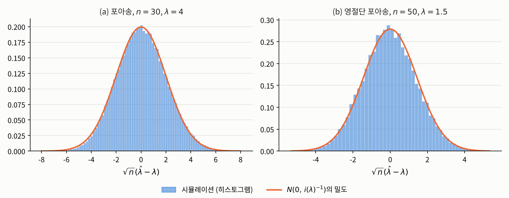
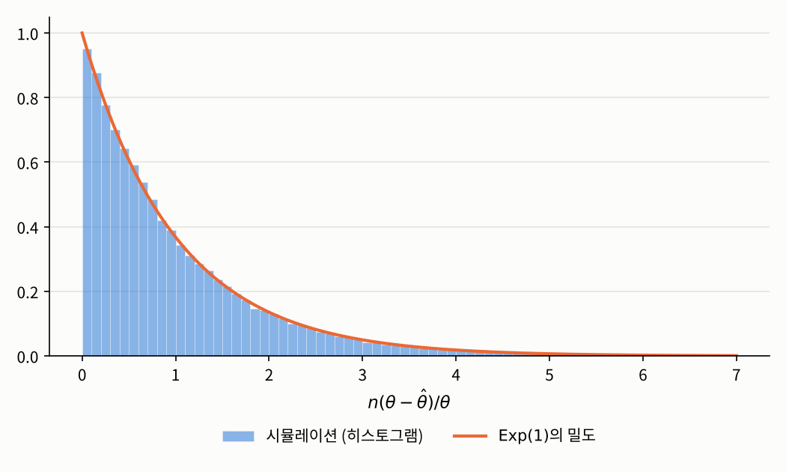

1.5 일치성과 점근 정규성
1장 최대우도 추정 · 추정값을 얼마나 믿을 수 있는가
들어가며
1장 소개 글에서 이번 장이 답할 세 가지 질문으로 원리, 계산, 불확실성을 꼽았습니다. 앞의 네 절에서 앞의 두 질문에 답했으니, 이제 마지막 질문이 남았습니다. 그렇게 구한 최대우도 추정값을 얼마나 믿을 수 있을까요?
1.1절에서 강조했듯이, 이 질문은 숫자 하나인 추정값만 들여다봐서는 답할 수 없습니다. 모집단 레벨로 올라가 추정량 \(\hat{\theta}_n = T(\mathbf{X})\)를 확률변수로 보고, 그 분포를 따져야 합니다. 그런데 최대우도 추정량은 1.4절의 예처럼 식으로 쓸 수조차 없는 경우가 많으니, 그 분포를 정확히 구하는 것은 대개 불가능합니다. 이번 글에서는 대신 표본이 커질 때 그 분포가 어떤 모양에 가까워지는지를 살펴봅니다. 놀랍게도 답은 모형과 거의 상관없이 하나로 정해지고, 그 답에 1.3절의 피셔 정보가 등장합니다.
문제 1: 표본이 커지면 최대우도 추정량은 어떻게 움직이는가
문제 상황
1.1절의 포아송 모형에서 최대우도 추정량은 \(\hat{\lambda}_n = \bar{X}\)였습니다. 하루 사고 건수를 30일, 300일, 3000일 동안 모으면, 표본마다 달라지는 \(\hat{\lambda}_n\)은 어떻게 행동할까요? 참값에 가까워질까요? 가까워진다면 얼마나 빨리, 어떤 모양으로 흩어지면서 가까워질까요? 그리고 1.4절의 영절단 포아송 모형처럼 추정량을 식으로 쓸 수 없는 경우에도 같은 이야기를 할 수 있을까요?
접근 아이디어
포아송 모형에서는 추정량이 표본평균이므로 확률론의 두 정리를 바로 쓸 수 있습니다. 큰 수의 법칙은 \(\bar{X}\)가 \(\lambda\)에 가까워진다고 말해 주고, 중심극한정리는 \(\sqrt{n}(\bar{X} - \lambda)\)가 정규분포 \(N(0, \lambda)\)에 가까워진다고 말해 줍니다. 여기서 분산 \(\lambda\)는 1.3절에서 구한 관측값 하나의 피셔 정보 \(i(\lambda) = 1/\lambda\)의 역수입니다.
추정량을 식으로 쓸 수 없는 경우에는 어떻게 할까요? 핵심은 1.3절에서 본 점수입니다. 최대우도 추정값은 점수가 \(0\)인 점이고, 점수는 확률표본에서 독립인 항들의 합입니다. 합에는 큰 수의 법칙과 중심극한정리를 쓸 수 있습니다. 즉 추정량 자체는 식으로 쓸 수 없어도, 추정량을 정하는 방정식은 합으로 쓸 수 있으니, 그 방정식을 통해 추정량의 행동을 알아낼 수 있다는 것입니다. 이 아이디어를 정확하게 만들려면 먼저 “가까워진다”의 뜻을 분명히 해야 합니다.
필요한 개념들
확률변수가 무언가에 “가까워진다”는 말에는 여러 의미가 있습니다. 이번 글에서는 두 가지를 씁니다.
확률수렴은 “\(Y_n\)이 \(Y\)에서 조금이라도 벗어날 확률이 점점 \(0\)이 된다”는 뜻이고, 분포수렴은 “\(Y_n\)의 분포 모양이 \(Y\)의 분포 모양에 가까워진다”는 뜻입니다. 분포수렴은 \(Y_n\)과 \(Y\)의 값이 가까워진다는 말이 아니라 분포만 가까워진다는 말이라서 더 약한 개념입니다. 중심극한정리가 바로 분포수렴에 대한 정리입니다.
원래는 보통 분포 수렴을 누적 분포 함수를 이용해서 \(F_n \to F\)가 성립함으로 표현하나, 이는 일반적으로 1차원 확률변수에 대한 정의입니다. 우리는 더 일반적인 확률벡터를 다루고 있으므로, 저렇게 분포 수렴과 동치인 약한 수렴을 빌려 분포 수렴을 표현합니다. 물론 이 약한 수렴 정의를 사용하는 부분은 없으므로(걍 언급만 됩니다.), 직관적으로는 \(F_n \to F\)의 느낌으로 생각하셔도 무방합니다.
추정량에 대해 우리가 바라는 가장 기본적인 성질은, 데이터가 많아지면 참값으로 다가가는 것입니다. 그래야지 그 참값을 잘 “추정”하는 추정량일테니까요. 이를 위해 다음의 성질을 정의합니다.
“모든 \(\theta\)에 대해”라는 조건이 중요합니다. 참값이 무엇이든 데이터만 충분하면 그 값을 찾아내야 한다는 뜻입니다. 참값이 \(4\)일 때만 잘 맞히는 추정량은 일치추정량이 아닙니다.
최대우도 추정량은 적절한 조건 아래에서 일치추정량입니다.
정칙 조건이라는 이름 하에 여러 수학적 조건이 붙지만, 실전에서 만나는 대부분의 정규 분포, 지수족 분포 등 우리에게 익숙한 맛의 모델들은 모두 이 조건을 만족합니다. 그래서 수학적 디테일이 필요 없다면 걍 대충 이런 이런 조건들이 있다, 그리고 그게 필요한 이유는 수학적으로 ’모든 개별 \(\theta\)에서 점별로 성립하는 수렴’을 ’그래프 전체의 꼭대기(최대점)가 참값으로 수렴한다’는 고른 수렴(Uniform Convergence)으로 빈틈없이 연결해 주는 안전장치가 된다 정도로 이해하고 넘어가셔도 충분합니다.
이걸 조금만 맛보기로 설명하자면, 핵심 아이디어는 다음과 같습니다. 로그우도를 \(n\)으로 나누면 독립인 항들의 평균이므로, 큰 수의 법칙에 의해 각 \(\theta\)에서 \[\frac{1}{n}\ell(\theta; \mathbf{X}) = \frac{1}{n}\sum_{i=1}^n \log f(X_i, \theta) \xrightarrow{\ P\ } \mathbb{E}_{\theta_0}[\log f(X_1, \theta)] =: M(\theta)\] 입니다. 그런데 이 극한 \(M\)은 정확히 참값 \(\theta_0\)에서 가장 큽니다. 실제로 \(\log\)가 오목하므로 옌센 부등식에 의해 \[M(\theta) - M(\theta_0) = \mathbb{E}_{\theta_0}\!\left[\log \frac{f(X_1, \theta)}{f(X_1, \theta_0)}\right] \le \log \mathbb{E}_{\theta_0}\!\left[\frac{f(X_1, \theta)}{f(X_1, \theta_0)}\right] \le \log 1 = 0\] 이고, 식별가능성 덕분에 \(\theta \neq \theta_0\)이면 등호가 성립하지 않습니다.2 즉 데이터가 무한히 많다면 로그우도의 꼭대기는 정확히 참값에 놓입니다. 최대우도 추정값은 유한한 데이터로 만든 로그우도의 꼭대기이므로, 데이터가 많아질수록 참값 근처로 모입니다. 증명에서 까다로운 부분은 “각 \(\theta\)에서의 수렴”을 “꼭대기 위치의 수렴”으로 바꾸는 단계이고, 정리의 정칙 조건들이 바로 이 단계를 위한 것입니다.
일치성은 추정량이 참값으로 간다는 것만 말해 줍니다. 얼마나 빨리, 어떤 모양으로 흩어지면서 가는지를 알려면 분포수렴이 필요합니다. 그 증명에서는 확률론의 다음 정리를 씁니다.
이제 이번 장의 가장 중요한 결과를 말할 수 있습니다.
이 정리는 다음과 같이 읽을 수 있습니다. 표본이 충분히 크면 최대우도 추정량은 근사적으로
\[\hat{\theta}_n \;\overset{\text{근사}}{\sim}\; N_d\big(\theta_0,\ I_n(\theta_0)^{-1}\big), \qquad I_n(\theta_0) = n\, i(\theta_0)\]
를 따릅니다. 즉 최대우도 추정량은 참값을 중심으로, 피셔 정보의 역수만큼 흩어집니다. 1.3절에서 “꼭대기가 뾰족할수록 데이터가 모수를 분명하게 정한다”고 한 직관이 정확한 식이 된 것입니다. 또 분산이 \(1/n\)에 비례하므로, 오차의 크기인 표준편차는 \(1/\sqrt{n}\)에 비례해서 줄어듭니다. 정확도를 두 배로 높이려면 데이터가 네 배 필요하다는 뜻입니다.
증명 스케치에서 하나 더 눈여겨볼 점이 있습니다. 최대우도 추정량의 무작위성은 결국 점수의 무작위성을 정보로 나눈 것입니다. 1.3절에서 점수와 피셔 정보를 따로 정의한 이유가 이 한 줄에 담겨 있습니다.
실제로 쓰려면 한 가지 문제가 남습니다. 분산 \(I_n(\theta_0)^{-1}\)에는 우리가 모르는 참값 \(\theta_0\)가 들어 있습니다. 그래서 실제로는 참값 자리에 추정값을 넣습니다.
해결
먼저 포아송 모형에서 정리 1.5.5가 말하는 내용을 확인해 보겠습니다. \(i(\lambda) = 1/\lambda\)이므로 정리는 \(\sqrt{n}(\hat{\lambda}_n - \lambda) \xrightarrow{D} N(0, \lambda)\)라고 말하는데, \(\hat{\lambda}_n = \bar{X}\)이므로 이는 중심극한정리 그 자체입니다. \(\lambda = 4\)로 두고 표본 크기를 바꿔 가며 10만 번씩 시뮬레이션해 보겠습니다.
import numpy as np
np.random.seed(2026)
lam, reps = 4, 100_000
for n in [10, 30, 300]:
lam_hat = np.random.poisson(lam=lam, size=(reps, n)).mean(axis=1) # 표본마다 계산한 MLE
Z = np.sqrt(n) * (lam_hat - lam)
print(f"n = {n:>3}: lam_hat의 표준편차 = {lam_hat.std():.4f}, "
f"sqrt(n)(lam_hat - lam)의 분산 = {Z.var():.4f}")
print(f"이론값 1/i(lam) = lam = {lam}")n = 10: lam_hat의 표준편차 = 0.6339, sqrt(n)(lam_hat - lam)의 분산 = 4.0181
n = 30: lam_hat의 표준편차 = 0.3653, sqrt(n)(lam_hat - lam)의 분산 = 4.0026
n = 300: lam_hat의 표준편차 = 0.1155, sqrt(n)(lam_hat - lam)의 분산 = 4.0008추정량의 표준편차는 \(n\)이 커질수록 \(0\)으로 줄어들고(일치성), \(\sqrt{n}\)을 곱해 확대한 오차의 분산은 언제나 이론값 \(4\) 근처에 머뭅니다(\(1/\sqrt{n}\) 속도). \(n = 30\)에서 10배인 \(n = 300\)으로 늘리면 표준편차는 \(\sqrt{10} \approx 3.16\)배 줄어드는데, 실제로 \(0.3653 / 0.1155 \approx 3.16\)입니다.
다음은 추정량을 식으로 쓸 수 없는 영절단 포아송 모형입니다. 1.4절에서 구한 피셔 정보로부터 관측값 하나의 피셔 정보는 \[i(\lambda) = \frac{1}{\lambda(1 - e^{-\lambda})} - \frac{e^{-\lambda}}{(1 - e^{-\lambda})^2}\] 이고, 정리 1.5.5에 따르면 추정량의 표준편차는 약 \(\sqrt{1/(n\,i(\lambda))}\)여야 합니다. 표본마다 피셔 스코어링으로 최대우도 추정값을 구해 확인해 보겠습니다. 1.4절에서 보았듯이 표본이 작을 때는 피셔 스코어링이 더 안정적입니다.
def ztp_mle(x, iters=30):
"""영절단 포아송 모형의 최대우도 추정값 (표본마다 피셔 스코어링)"""
n, xbar = x.shape[1], x.mean(axis=1)
lam = xbar.copy()
for _ in range(iters):
q = np.exp(-lam)
u = n * (xbar / lam - 1 / (1 - q))
I = n * (1 / (lam * (1 - q)) - q / (1 - q)**2)
lam = lam + u / I
return lam
def ztp_sample(lam, size):
"""0이 나온 자리는 0이 아닌 값이 나올 때까지 다시 뽑아 영절단 포아송 표본을 만듦"""
x = np.random.poisson(lam=lam, size=size)
while (x == 0).any():
x[x == 0] = np.random.poisson(lam=lam, size=(x == 0).sum())
return x
np.random.seed(2026)
lam, reps = 1.5, 20_000
q = np.exp(-lam)
i_lam = 1 / (lam * (1 - q)) - q / (1 - q)**2 # 관측값 하나의 피셔 정보
for n in [20, 50, 500]:
lam_hat = ztp_mle(ztp_sample(lam, (reps, n)))
print(f"n = {n:>3}: 평균 = {lam_hat.mean():.4f}, 표준편차 = {lam_hat.std():.4f}, "
f"이론값 sqrt(1/(n i)) = {np.sqrt(1 / (n * i_lam)):.4f}")n = 20: 평균 = 1.4926, 표준편차 = 0.3205, 이론값 sqrt(1/(n i)) = 0.3199
n = 50: 평균 = 1.4952, 표준편차 = 0.2028, 이론값 sqrt(1/(n i)) = 0.2024
n = 500: 평균 = 1.4993, 표준편차 = 0.0638, 이론값 sqrt(1/(n i)) = 0.0640추정량을 식으로 쓸 수 없는데도, 그 표준편차가 피셔 정보만으로 계산한 값과 거의 정확히 일치합니다. 평균은 참값 \(1.5\)보다 조금 작지만 \(n\)이 커질수록 그 차이도 줄어듭니다. 아래 그림은 두 모형에서 \(\sqrt{n}(\hat{\lambda} - \lambda)\)의 분포를 정리 1.5.5의 정규분포와 겹쳐 그린 것입니다.

마지막으로 실제 데이터에서 표준오차(참고 1.5.6)를 계산해 보겠습니다. 1.1절의 포아송 데이터에서는 \(I_n(\hat{\lambda}) = n/\bar{x}\)이므로 \(\widehat{\mathrm{se}}(\hat{\lambda}) = \sqrt{\bar{x}/n} = \sqrt{4.1333/30} \approx 0.371\)입니다. 1.4절의 영절단 포아송 데이터에서는 다음과 같습니다.
n, lam_hat = 50, 1.4852043774 # 1.4절에서 구한 최대우도 추정값
q = np.exp(-lam_hat)
I_hat = n * (1 / (lam_hat * (1 - q)) - q / (1 - q)**2)
print(f"I_n(lam_hat) = {I_hat:.4f}, 표준오차 = {1 / np.sqrt(I_hat):.4f}")I_n(lam_hat) = 24.5983, 표준오차 = 0.2016즉 1.4절의 추정값 \(1.485\)는 대략 \(\pm 0.2\) 정도의 오차를 안고 있는 셈입니다. 5장에서는 이 표준오차로 신뢰구간과 가설검정을 만듭니다.
문제 2: 이보다 더 정확할 수는 없는가
문제 상황
최대우도 추정량의 분산이 근사적으로 \(I_n(\theta)^{-1}\)이라는 것을 알았습니다. 그렇다면 다른 추정 방법을 쓰면 이보다 분산을 더 줄일 수 있을까요?
해결
적어도 평균적으로 참값을 맞히는 추정량 가운데에서는, 피셔 정보의 역수보다 분산을 줄일 수 없습니다. 모수가 하나인 경우로 정리하면 다음과 같습니다.
이 정리에 의해 \(I_n(\theta)^{-1}\)은 불편추정량의 분산이 내려갈 수 있는 바닥입니다. 모수가 여러 개일 때도 같은 방식으로, \(k\)번째 성분의 불편추정량의 분산은 \(\big[I_n(\theta)^{-1}\big]_{kk}\)보다 작아질 수 없다는 것을 보일 수 있습니다. 그런데 정리 1.5.5에 따르면 최대우도 추정량의 분산은 표본이 커질 때 정확히 이 바닥에 다가갑니다. 이런 의미에서 최대우도 추정량을 점근적으로 효율적(asymptotically efficient)이라고 합니다. 최대우도 추정이 통계학의 표준적인 방법이 된 가장 큰 이유입니다.
두 예로 확인해 보겠습니다.
- 포아송: \(\mathrm{Var}_\lambda(\bar{X}) = \lambda/n = I_n(\lambda)^{-1}\)이므로, 최대우도 추정량 \(\bar{X}\)는 모든 \(n\)에서 이 바닥에 정확히 도달합니다.
- 정규분포의 분산: 평균과 분산을 모두 모를 때, 1.3절에서 구한 피셔 정보 행렬의 역행렬은 \(\mathrm{diag}(\sigma^2/n,\ 2\sigma^4/n)\)이므로 \(\sigma^2\)의 불편추정량의 분산의 바닥은 \(2\sigma^4/n\)입니다. 1.1절에서 본 불편추정량 \(s^2\)의 분산은 \(2\sigma^4/(n-1)\)로 이 바닥보다 조금 큽니다.
np.random.seed(2026)
mu, s2, reps = 170, 36, 100_000
for n in [5, 20, 100]:
Y = np.random.normal(loc=mu, scale=np.sqrt(s2), size=(reps, n))
s2_hat = Y.var(axis=1, ddof=1) # 불편추정량 s^2
print(f"n = {n:>3}: Var(s^2) = {s2_hat.var():8.3f}, "
f"이론값 2 sigma^4/(n-1) = {2 * s2**2 / (n - 1):8.3f}, 하한 2 sigma^4/n = {2 * s2**2 / n:8.3f}")n = 5: Var(s^2) = 642.783, 이론값 2 sigma^4/(n-1) = 648.000, 하한 2 sigma^4/n = 518.400
n = 20: Var(s^2) = 136.348, 이론값 2 sigma^4/(n-1) = 136.421, 하한 2 sigma^4/n = 129.600
n = 100: Var(s^2) = 26.282, 이론값 2 sigma^4/(n-1) = 26.182, 하한 2 sigma^4/n = 25.920표본이 작을 때는 하한과 차이가 꽤 나지만, \(n\)이 커질수록 그 비율 \(n/(n-1)\)은 \(1\)에 가까워집니다. 사실 \(s^2\)는 \(\sigma^2\)의 불편추정량 가운데 분산이 가장 작다고 알려져 있으므로, 이 모형에서는 하한에 정확히 도달하는 불편추정량이 아예 없습니다. 크라메르-라오 하한은 언제나 도달할 수 있는 값이 아니라 넘을 수 없는 바닥이라는 뜻입니다. 그래도 표본이 크면 그 차이는 사라집니다.
문제 3: 정칙 조건이 깨지면
문제 상황
정리 1.5.5에는 꽤 많은 정칙 조건이 붙어 있었습니다. 이 조건들이 깨지면 어떻게 될까요? 1.2절과 1.3절에서 여러 번 예고한 \(U[0, \theta]\) 모형을 살펴보겠습니다. 이 모형은 받침이 \(\theta\)에 따라 움직여서 정리 1.3.4의 조건 1이 깨지고, 따라서 정리 1.5.5의 조건 2도 성립하지 않습니다.
해결
1.2절에서 구한 최대우도 추정량은 \(\hat{\theta}_n = X_{(n)}\)입니다. 이 경우에는 분포를 직접 계산할 수 있습니다. \(t \in [0, n]\)에 대해 \[\mathbb{P}_\theta\!\left(\frac{n(\theta - X_{(n)})}{\theta} > t\right) = \mathbb{P}_\theta\!\left(X_{(n)} < \theta\Big(1 - \frac{t}{n}\Big)\right) = \Big(1 - \frac{t}{n}\Big)^n \xrightarrow[n \to \infty]{} e^{-t}\] 입니다. 첫 번째 등호는 식을 정리한 것이고, 두 번째 등호는 \(n\)개의 관측값이 모두 \(\theta(1 - t/n)\)보다 작을 확률이 각각의 확률 \(1 - t/n\)의 곱이기 때문입니다. 즉 \[\frac{n\,(\theta - \hat{\theta}_n)}{\theta} \xrightarrow{\ D\ } \mathrm{Exp}(1)\] 입니다. 정리 1.5.5와 두 가지가 다릅니다.
- 수렴 속도가 \(\sqrt{n}\)이 아니라 \(n\)입니다. 오차가 \(1/\sqrt{n}\)이 아니라 \(1/n\) 속도로 줄어들어, 정칙 모형보다 훨씬 빠르게 참값에 다가갑니다.
- 극한분포가 정규분포가 아닙니다. 추정량이 항상 참값보다 작으므로 오차는 한쪽으로만 생기고, 그 분포는 지수분포입니다.
np.random.seed(2026)
theta, reps = 10, 100_000
for n in [10, 100, 1000]:
theta_hat = np.random.uniform(0, theta, size=(reps, n)).max(axis=1)
W = n * (theta - theta_hat) / theta
print(f"n = {n:>4}: theta_hat의 표준편차 = {theta_hat.std():.5f}, "
f"n(theta - theta_hat)/theta의 평균 = {W.mean():.4f}, 분산 = {W.var():.4f}")n = 10: theta_hat의 표준편차 = 0.83237, n(theta - theta_hat)/theta의 평균 = 0.9095, 분산 = 0.6928
n = 100: theta_hat의 표준편차 = 0.09862, n(theta - theta_hat)/theta의 평균 = 0.9881, 분산 = 0.9726
n = 1000: theta_hat의 표준편차 = 0.00996, n(theta - theta_hat)/theta의 평균 = 0.9972, 분산 = 0.9913\(n\)이 10배가 될 때마다 표준편차가 \(\sqrt{10}\)배가 아니라 거의 정확히 10배씩 줄어들고, \(n(\theta - \hat{\theta}_n)/\theta\)의 평균과 분산은 \(\mathrm{Exp}(1)\)의 평균과 분산인 \(1\)에 다가갑니다.

같은 이유로 크라메르-라오 하한도 이 모형에서는 의미를 잃습니다. 예를 들어 치우침을 바로잡은 \(\frac{n+1}{n}X_{(n)}\)은 불편추정량인데, 그 분산은 \(\theta^2/\{n(n+2)\}\)로 \(1/n^2\)에 비례해 줄어듭니다. 정칙 모형에서는 불편추정량의 분산이 \(1/n\)보다 빨리 줄어들 수 없다는 것과 대조적입니다. 정칙 조건은 단지 증명을 편하게 하려는 기술적인 조건이 아니라, 결론 자체를 바꾸는 조건이라는 것을 알 수 있습니다.
반대로, 정칙 조건은 정리 1.5.5가 성립하기 위한 충분조건일 뿐 필요조건은 아닙니다. 예를 들어 밀도가 \(f(x, \theta) = \frac{1}{2}e^{-|x - \theta|}\)인 라플라스 분포(Laplace distribution)의 위치 모수 모형에서는 로그우도 \(\ell(\theta; \mathbf{x}) = -\sum_{i=1}^n |x_i - \theta| - n\log 2\)가 관측값마다 꺾여서 미분가능하지 않고, 최대우도 추정량은 표본 중앙값이 됩니다. 이 모형은 정리 1.5.5의 조건 2를 만족하지 않지만, 그래도 \[\sqrt{n}\,(\hat{\theta}_n - \theta) \xrightarrow{\ D\ } N(0, 1)\] 이 성립합니다. 이 분산 \(1\)은 이 모형의 관측값 하나의 피셔 정보 \(i(\theta) = \mathbb{E}_\theta\big[\mathrm{sign}(X_1 - \theta)^2\big] = 1\)의 역수와 같습니다. 정칙 조건이 깨졌다고 해서 결론이 반드시 깨지는 것은 아닌 셈입니다. 정칙 조건은 결론이 성립함을 보장하는 조건이고, 조건이 깨진 모형은 \(U[0, \theta]\)처럼 결론이 달라질 수도, 라플라스 분포처럼 그대로 성립할 수도 있으니 따로 따져 봐야 합니다.
정리: 1장을 마치며
이번 글의 결과를 한 줄로 요약하면 다음과 같습니다. 정칙 조건 아래에서 최대우도 추정량은
\[\hat{\theta}_n \;\overset{\text{근사}}{\sim}\; N_d\big(\theta_0,\ I_n(\theta_0)^{-1}\big)\]
를 따르고, 이 분산은 불편추정량이 도달할 수 있는 바닥과 같습니다.
이로써 1장 소개 글에서 던진 세 질문에 모두 답했습니다.
| 질문 | 답 | 절 |
|---|---|---|
| 원리: 모수를 어떻게 정하는가? | 우도를 최대화하는 모수를 고른다. 존재·유일성은 모형과 모수공간에 따라 확인이 필요하다. | 1.1, 1.2 |
| 계산: 식으로 풀 수 없으면? | 점수와 정보를 이용한 뉴턴-랩슨 방법, 피셔 스코어링 | 1.3, 1.4 |
| 불확실성: 얼마나 믿을 수 있는가? | 근사적으로 \(N(\theta_0, I_n(\theta_0)^{-1})\)을 따르며, 표준오차로 그 크기를 잰다. | 1.3, 1.5 |
세 답 모두에서 로그우도의 모양, 즉 꼭대기의 위치와 기울기와 곡률이 중심에 있었습니다. 이 이야기는 뒤의 장들에서 계속 쓰입니다. 3장과 4장에서는 선형 회귀와 로지스틱 회귀의 모수를 최대우도로 추정하고, 5장에서는 이번 글의 점근 정규성과 표준오차로 신뢰구간과 가설검정을 만듭니다.
연결되는 개념
- \(\leftarrow\) 이전 개념: 1.4 뉴턴-랩슨 방법과 피셔 스코어링
- \(\rightarrow\) 다음 개념: 2 변수 사이의 의존성 측정
Footnotes
A. W. van der Vaart, Asymptotic Statistics, Cambridge University Press, 1998, 5장. 일치성과 점근 정규성의 정확한 조건과 증명이 정리되어 있습니다.↩︎
이 차이에 음의 부호를 붙인 양 \(\mathbb{E}_{\theta_0}[\log\{f(X_1, \theta_0)/f(X_1, \theta)\}]\)를 쿨백-라이블러 발산(Kullback–Leibler divergence)이라고 하며, 두 분포가 얼마나 다른지를 재는 대표적인 양입니다. 등호 조건은 옌센 부등식에서 \(f(X_1, \theta)/f(X_1, \theta_0)\)가 거의 확실하게 상수일 때이고, 두 함수가 모두 밀도이므로 그 상수는 \(1\), 즉 \(P_\theta = P_{\theta_0}\)일 때뿐입니다.↩︎
A. W. van der Vaart, Asymptotic Statistics, Cambridge University Press, 1998, 5장. 일치성과 점근 정규성의 정확한 조건과 증명이 정리되어 있습니다.↩︎